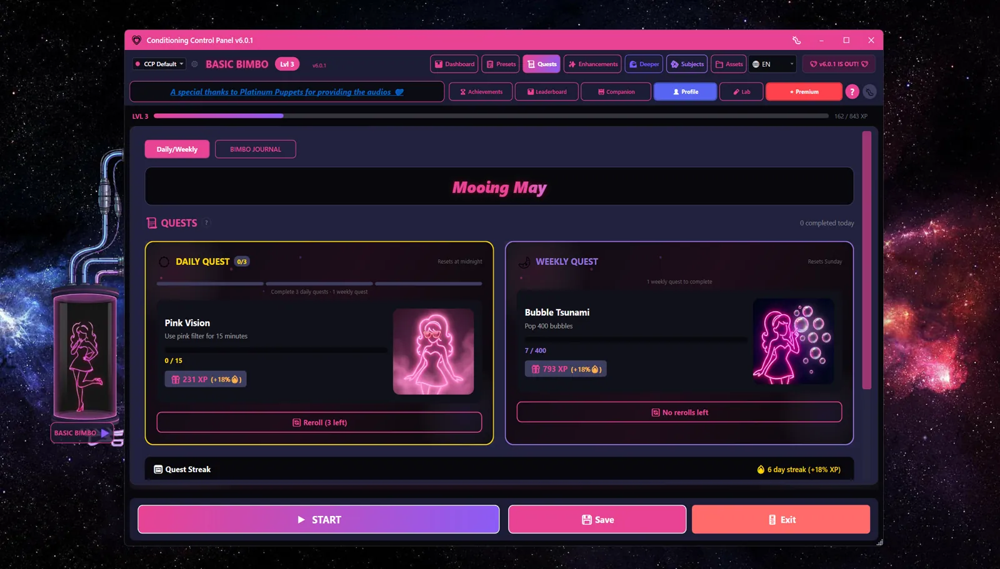
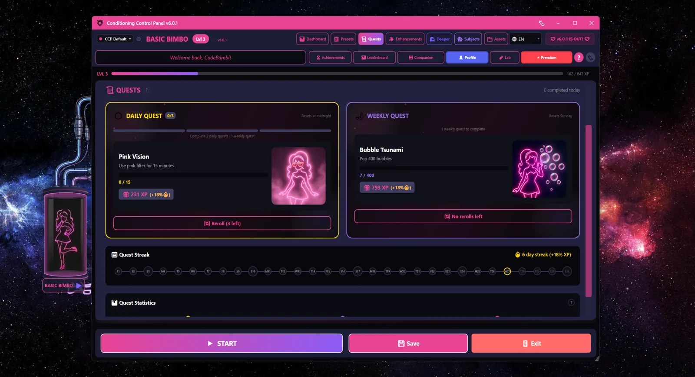

Overview
Quests are small goals the app sets for you. Hit the target, get XP. They live in the Quests tab, and they exist so there is always something specific to aim at instead of just "use the app for a while".
There are only two kinds: daily and weekly. No story quests, no chains, no difficulty setting. Every quest is drawn at random from a pool.
- You see one daily and one weekly quest at a time. Finish the daily and the next one appears immediately, up to 3 dailies a day.
- The reward is always XP only. No sparkle points, no unlocks, no items.
- Quest XP scales +4% per level, so the same quest pays a level 80 player far more than a level 5 one.
- The quest pool turns over with the app's monthly calendar, though nothing you have earned turns over with it.
Quests need an account
The whole Quests tab sits behind a login. If you have not signed in with Discord or Patreon, the tab shows a prompt instead of quests. Most of the app works fine offline - quests do not, because the quest pool and your streak both live on the server.
Daily Quests

You get 3 daily quests a day, one at a time. Complete the one on screen and the next rolls straight away, picked at random and never the one you just did. After the third, the card tells you to come back tomorrow.
Ten of the twenty daily quests are open to everyone. The other ten need Patreon, because they ask for Patreon-only features (Takeover, Lockdown, keyword triggers, remote control, the blink trainer). If you are not subscribed, those never turn up in your rolls at all.
| Quest | What it wants | Base XP | Pool |
|---|---|---|---|
| Bimbo Basics | View 25 flash images | 100 XP | everyone |
| Flash Rush | View 40 flash images | 130 XP | everyone |
| Pop Parade | Pop 40 bubbles | 150 XP | everyone |
| Count Along | Finish 2 bubble count games | 175 XP | everyone |
| Soft Static | Spend 25 minutes with any overlay active | 175 XP | everyone |
| Pink Haze | Use the pink filter for 15 minutes | 175 XP | everyone |
| Spiral Sink | Spend 12 minutes with the spiral overlay | 200 XP | everyone |
| Screen Trance | Watch 12 minutes of video | 200 XP | everyone |
| Lock It In | Complete 2 lock cards | 200 XP | everyone |
| Daily Devotion | Complete 1 session | 250 XP | everyone |
| Trigger Words | Fire 15 keyword triggers | 200 XP | Patreon |
| Blink Drill | Log 30 blinks in the live blink trainer | 200 XP | Patreon |
| Hands Off | Let Bambi Takeover run for 15 minutes | 250 XP | Patreon |
| Hand Over Control | Take 25 remote commands | 250 XP | Patreon |
| Word Slave | Fire 30 keyword triggers | 300 XP | Patreon |
| Obedient Eyes | Log 50 blinks in the live blink trainer | 300 XP | Patreon |
| Locked Away | Complete 1 lockdown | 300 XP | Patreon |
| On Autopilot | Let Bambi Takeover run for 25 minutes | 350 XP | Patreon |
| Remote Hands | Take 50 remote commands | 350 XP | Patreon |
| Surrender | Let Bambi Takeover run for 40 minutes | 450 XP | Patreon |
These are base numbers
The XP column is the raw value before scaling. What lands in your account is always more than this - see how quest XP is calculated below.
Weekly Quests
One weekly quest at a time, bigger targets, bigger payouts. Same split: ten for everyone, ten for Patreon subscribers.
| Quest | What it wants | Base XP | Pool |
|---|---|---|---|
| Conditioning Champion | Earn 2,000 XP from activities | 500 XP | everyone |
| Flash Monsoon | View 600 flash images | 600 XP | everyone |
| Bubble Storm | Pop 500 bubbles | 600 XP | everyone |
| Streak Keeper | Maintain a 7-day streak | 600 XP | everyone |
| Pink World | Use the pink filter for 200 minutes | 700 XP | everyone |
| Total Submission | Complete 15 bubble count games | 700 XP | everyone |
| Spiral Descent | Spend 150 minutes with the spiral overlay | 750 XP | everyone |
| Phrase Mastery | Complete 15 lock cards | 750 XP | everyone |
| Marathon Trance | Watch 90 minutes of video | 800 XP | everyone |
| Weekly Devotion | Complete 7 sessions | 1,000 XP | everyone |
| Blink Century | Log 100 blinks in the live blink trainer | 700 XP | Patreon |
| Pavlov | Fire 300 keyword triggers | 750 XP | Patreon |
| Lockdown Habit | Complete 5 lockdowns | 800 XP | Patreon |
| Puppet Strings | Take 100 remote commands | 800 XP | Patreon |
| Set It and Forget It | Let Bambi Takeover run for 120 minutes | 900 XP | Patreon |
| Eyes Trained | Log 200 blinks in the live blink trainer | 1,000 XP | Patreon |
| Throw Away the Key | Complete 7 lockdowns | 1,000 XP | Patreon |
| Always On | Let Bambi Takeover run for 180 minutes | 1,100 XP | Patreon |
| Fully Remote | Take 200 remote commands | 1,100 XP | Patreon |
| Word-Conditioned | Fire 1,000 keyword triggers | 1,200 XP | Patreon |
How Quest XP Is Calculated
The number on the card is not the base number. Three things multiply it:
Quest XP = base × (1 + level × 0.04) × betterQuests × (1 + questStreak × 0.03)
| Factor | Effect |
|---|---|
| Your level | +4% per level. This is the big one. |
| Quest streak | +3% for every consecutive day you have finished a daily quest |
| Better Quests skill | 1.25x. The skill is described as a bonus on rerolled quests, but the app applies it to every quest completion. |
A worked example. Daily Devotion has a base of 250 XP. At level 50, with a 10-day quest streak and the Better Quests skill:
250 × (1 + 50 × 0.04) × 1.25 × (1 + 10 × 0.03) = 250 × 3.0 × 1.25 × 1.30 = 1,219 XP
Perfect Bimbo Week pays separately
If you own the Perfect Bimbo Week skill you also get a one-off lump sum when your daily quest streak hits a milestone: 3,000 XP at 7 days, 6,000 at 14, 10,000 at 30. Each of those scales a further +2% per level. This is paid on top of the quest itself.
Quest Refresh
- Dailies reset at local midnight. Your 3 slots come back and the streak clock ticks over.
- Weeklies reset once a week. The card says Sunday, but the app's internal week actually starts on Monday, so that is when the swap happens.
- The quest pool is fetched from the server and cached on your machine for 24 hours, plus a forced refresh whenever the month rolls over.
- If you are offline, quests come from the last cached list, or from the copy built into the app if you have never been online.
- If a quest you are part-way through vanishes from the server pool, or you lose Patreon access mid-quest, the app quietly rolls you a replacement.
Rerolls
If a quest asks for something you do not feel like doing, reroll it. There is a button on each card.
- Everyone gets 1 daily and 1 weekly reroll.
- Patreon subscribers get 3 of each.
- Quest Refresh skill: 1 more daily reroll
- Reroll Addict skill: 2 more daily rerolls
- Better Quests skill: +25% quest XP
A finished quest cannot be rerolled, and a reroll never hands back the quest you just skipped.
Tip
Quest Refresh and Reroll Addict sit at the ends of two different chains in the skill_tree.dat, so collecting every extra reroll means finishing both. Better Quests is the cheaper win if you only want one of them.
Streaks

Complete at least one daily quest per day to keep your quest streak. That is the whole rule. The streak feeds back into quest XP at +3% per day and unlocks the Perfect Bimbo Week payouts.
Two streaks, not one
The app tracks a quest streak (days you finished a daily quest) and a separate login streak (days you opened the app at all). Quest XP uses the quest streak. Streak Power and Milestone Rewards, below, use the login streak. Doing a daily quest keeps both alive at once.
Streak Multiplier
With the Streak Power skill, your login streak adds +0.5% to all XP per day, capped at +15%. It maxes out at a 30-day streak.
Milestone Rewards
The Milestone Rewards skill pays you a bonus each day just for having a login streak. The longer the streak, the bigger the tier:
| Streak Days | Daily Bonus |
|---|---|
| 1-3 days | 50 XP |
| 4-6 days | 100 XP |
| 7-13 days | 150 XP |
| 14-29 days | 200 XP |
| 30+ days | 300 XP |
These are base values too. They scale a further +3% per level on top.
Streak Protection
- Good Girl Streak skill: one streak shield a week, which forgives a single missed day automatically
- Oopsie Insurance skill: gives you a streak fix charge that spends itself when your login streak breaks
- Fix Day button on the streak calendar: spend a streak fix charge by hand to fill in a day you missed
Miss a day with nothing in reserve and the streak is gone
There is no grace period beyond the shields and charges above. If you know you are going to miss a day, one short daily quest is usually a few minutes of work.
Seasonal Quests
The quest pool follows the app's monthly calendar, which is the same calendar the leaderboard rotates on:
- Each month gets a silly themed name, shown as a banner at the top of the Quests tab
- The server can mark quests as seasonal, with a start and end date. They are not listed separately - they just get mixed into the normal daily and weekly pools while they are live
- Your quest streak, your quest history and your streak fix charges all carry straight through the turn of the month. The monthly rollover used to zero the first two of those, and it doesn't any more
- The only thing the rollover changes is which quests are in the pool and which standings table you are being ranked on
Nothing is taken off you at the rollover
Your level, your XP, your streak and everything you have unlocked carry forward, and they will keep doing that from here on. descent.log has the whole picture.
The other half of the Quests tab
The tab has a second sub-tab, the Bimbo Journal. That is a different system: three fixed tracks of seven steps each, with a photo upload at every step and a boss step that unlocks the next track. It is not part of the quest pool, and none of the rules on this page apply to it.
Note
See leaderboard.htm for what the monthly rollover does to the standings table.